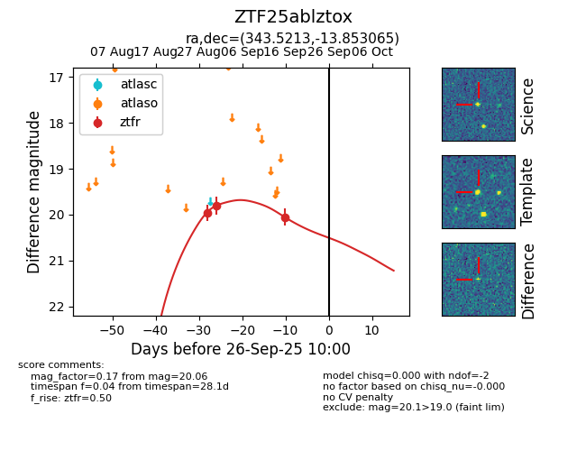
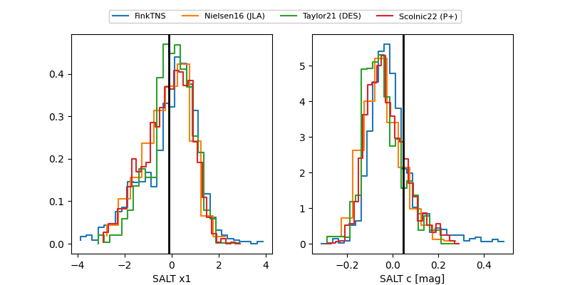

FINK: ZTF25ablztox
Lasair: ZTF25ablztox
ALeRCE: ZTF25ablztox
ZTF25ablztox (ztf,fink)
equatorial (ra, dec) = (343.5213,-13.85306)
galactic (l, b) = (52.9001,-59.59294)


last ztfr=20.06
3 ztfr detections